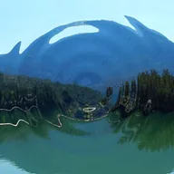

Cirkelvormige rimpeling

Laat cirkelvormige rimpelingen uitdijen vanuit een punt, als een druppel die in water valt. Met Meten op Scherm worden Frequentie, Sterkte en Straal op het scherm gemeten in plaats van op de laag.
Instellingen
| Instelling | Type | Bereik | Standaard |
|---|---|---|---|
| Midden | Punt (X, Y) | -1 tot 2 | 0.5, 0.5 |
| Frequentie | Getal | 0 tot 100 | 20 |
| Sterkte | Getal | -1 tot 1 | 0.03 |
| Fase | Getal | -1000 tot 1000 | 0 |
| Straal | Getal | 0 tot 0.8 | 0.3 |
| Zachte rand | Getal | 0 tot 1 | 0.1 |
| Meten op | Keuze | Laag, Scherm | Laag |